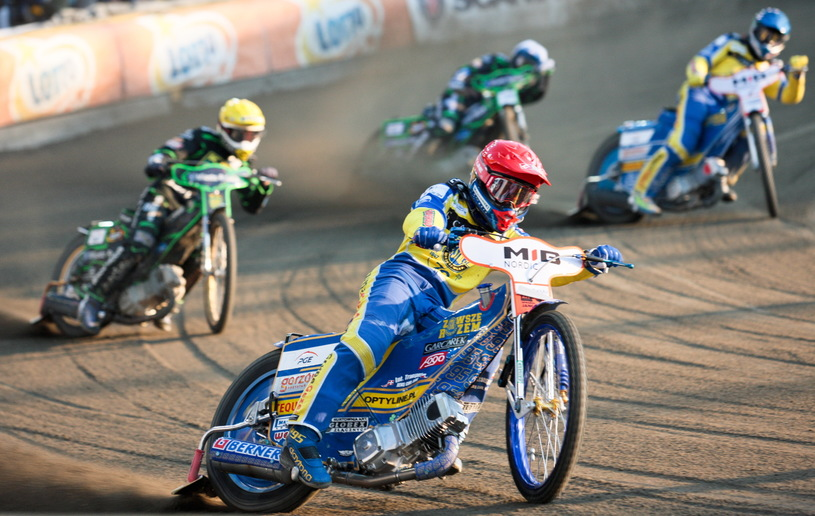
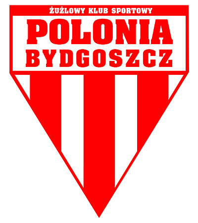

Speedway Ekstraliga – najwyższa w hierarchii klasa ligowych rozgrywek żużlowych w Polsce (I poziom ligowy), utworzona w 1999 roku w miejsce amatorskiej I ligi. Liga profesjonalna (od sezonu 2007 w pełni zawodowa). Zmagania w jej ramach toczą się cyklicznie – począwszy od sezonu 2000 – systemem kołowym (od sezonu 2005 wraz z fazą play-off), jako mistrzostwa kraju i przeznaczone są dla najlepszych polskich klubów żużlowych. Triumfator Ekstraligi zostaje jednocześnie mistrzem Polski, zaś najsłabsze drużyny relegowane są do I ligi.
Ekstraliga żużlowa jest obok piłkarskiej Ekstraklasy najlepszą ligą sportową w Polsce jeśli chodzi o frekwencję na meczach.
| Sezon | Zwycięzca | |
| 2018 | Unia Leszno |  |
| 2017 | Unia Leszno | |
| 2016 | Stal Gorzów |  |
| 2015 | Unia Leszno | |
| 2014 | Stal Gorzów | |
| 2013 | Falubaz Zielona Góra |  |
| 2012 | Unia Tarnów |  |
| 2011 | Falubaz Zielona Góra | |
| 2010 | Unia Leszno | |
| 2009 | Falubaz Zielona Góra | |
| 2008 | Apator Toruń |  |
| 2007 | Unia Leszno | |
| 2006 | WTS Wrocław |  |
| 2005 | Unia Tarnów | |
| 2004 | Unia Tarnów | |
| 2003 | Włokniarz Częstochowa |  |
| 2002 | Polonia Bydgoszcz |  |
| 2001 | Apator Toruń | |
| 2000 | Polonia Bydgoszcz | |